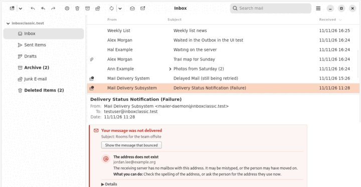

Mensagens que não foram entregues
O Inbox Classic explica os avisos de falha ou atraso na entrega que reconhece e sugere o que pode fazer.
Os avisos de falha ou atraso na entrega são assinalados na lista de mensagens. Ao abrir um aviso, aparece um painel acima da mensagem que indica se a entrega falhou ou está apenas atrasada.

O painel analisa os dados reconhecidos no aviso, apresenta os destinatários disponíveis e explica o motivo em linguagem simples. As sugestões de reenvio aplicam-se a falhas definitivas. O botão Detalhes mostra a resposta original do servidor de destino.
- Mostrar a mensagem devolvida seleciona a mensagem enviada, se esta for encontrada na conta.
- Se a entrega estiver atrasada, Mostrar a mensagem atrasada seleciona a mensagem, se for encontrada. O aviso indica que o servidor ainda estava a tentar, sem garantir a entrega posterior. Evite reenviar enquanto o atraso não se tornar uma falha definitiva.
Motivos comuns e conselhos para uma falha definitiva. Se a entrega estiver apenas atrasada, aguarde o resultado antes de reenviar:
| O painel indica | O que fazer |
|---|---|
| O endereço não existe | Verifique como o endereço está escrito, ou peça à pessoa o endereço que usa agora. |
| A caixa de correio está cheia | Contacte a pessoa de outra forma e peça-lhe para libertar espaço antes de tentar novamente. |
| Recusada como lixo eletrónico | Consulte a explicação do servidor. Se o conteúdo foi rejeitado, reveja a mensagem antes de tentar novamente. |
| O seu servidor de correio está numa lista de bloqueio | Reencaminhe o aviso para o seu fornecedor de correio. Segundo o aviso, o endereço do servidor de envio está bloqueado. |
| Retida por momentos | Se o aviso indicar um atraso, aguarde nova tentativa do servidor. Se indicar falha definitiva, tente reenviar mais tarde. |
Para encontrar todos os avisos de entrega, pesquise is:bounce. O motivo é analisado no seu computador, sem enviar o conteúdo para serviços externos.